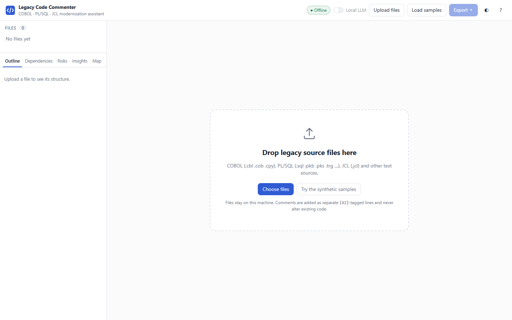
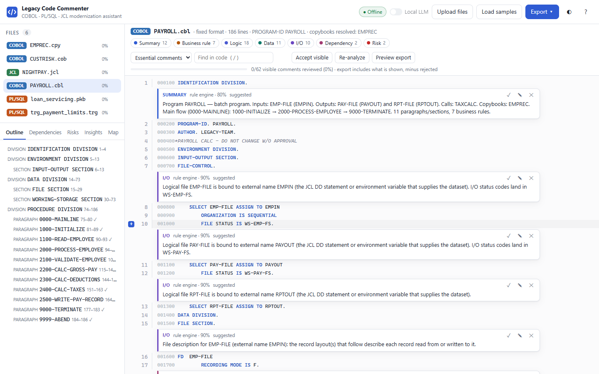
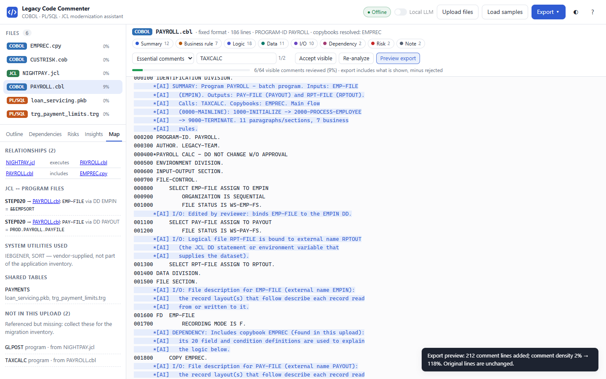

User guide
For developers, business analysts and project managers on legacy modernization engagements. The app reads COBOL, PL/SQL and JCL and adds plain-English comments that explain what the code does. You review them and export the result.
Getting started
Start the app with python run.py. It opens at http://localhost:8765. Load code with Upload files or drag files onto the page, or try it on the demo code first:

The two indicators in the top bar
- ● Offline
- Everything runs on this computer. The app only accepts connections from this machine, and the page is blocked from contacting any other site. "Upload" only moves a file from your disk into the local app. This badge is always on; it is a guarantee, not a setting.
- Local LLM
- Optional. When an AI model runs on this machine through Ollama, this switch rewrites summaries in more natural English. If it is greyed out, no local model was found; hover over it to see why. Every feature works without it. See Optional local LLM.
Load code
- Supported files: COBOL
.cbl .cob .cpy, PL/SQL.sql .pls .pks .pkb .prc .fnc .trg, JCL.jcl .proc. Other text files get a basic structural pass. - Upload copybooks together with the programs that use them. Their fields and condition names (88-levels) then appear in the program's explanations, with any
COPY … REPLACINGapplied. If you add a copybook later, programs that use it are re-analyzed automatically, and your review decisions are kept. - Upload PROCLIB members together with the jobs that call them, as
.proc,.prcor.jclfiles named after the procedure. EachEXEC procnamestep is then expanded into the procedure's steps, with symbols (SET, PROC defaults, EXEC overrides) and DD overrides applied. - Nested programs: a source file holding several programs is split per program in the outline, and calls between them are marked as internal.
- Continuing a review: re-uploading a file that was exported earlier imports its
[AI]comments, so the review can continue later or with another person.
Read the comments
Each card sits directly above the line it explains. Its colour and label show the kind of comment:
| Kind | What it tells you |
|---|---|
| Summary | What a program, paragraph, procedure or job step does, what it reads and writes, and who calls it. |
| Business rule | A business decision: IF/EVALUATE/CASE conditions in plain English, 88-level meanings, validations that reject input. |
| Logic | Calculations (with rounding or truncation behaviour), loops, error handlers, transaction control. |
| Data | Record layouts with byte sizes, packed-decimal fields and their target types, tables (OCCURS), cursors. |
| I/O | Files, datasets and SQL statements: what is read, written, created or deleted. |
| Dependency | Calls to other programs, packages and procedures, and copybooks. |
| Risk | Things that break easily during migration: GO TO, REDEFINES, dynamic SQL, commits inside loops, swallowed errors. |
| Note | Your own comments. |
The header of each card shows where it came from (rule engine, local LLM, you or imported), how confident the analyzer is, and its review status.
- Use the chips above the code to show or hide kinds. Double-click a chip to show only that kind.
- Essential / Detailed controls how much is shown. Detailed adds field-by-field data notes and simple arithmetic.
- Arrows in comments mean direction of data:
SORTIN ← PROD.EMP.MASTERreads from that dataset,SORTOUT → &&EMPSORTwrites to it. - New to mainframe terms such as DD, DISP or COMP-3? See Mainframe terms.
Review: accept, edit, reject
Every generated comment starts as suggested. Each card has ✓ accept, ✎ edit and ✕ reject buttons, and the progress bar shows how much of the visible commentary has been reviewed.

- Rejected comments stay visible, struck through, with ↺ Undo.
- Edited comments are marked edited, which is useful for audit trails.
- Accept visible accepts everything currently shown.
- + in the gutter (hover over a line number) adds your own comment above that line.
- Re-analyze re-runs the analysis and keeps every comment you accepted, edited, rejected or wrote.
Your review is saved in this browser on this computer. Use Export to keep a durable copy or hand it to a colleague.
Export
Export ▾ offers:
- Annotated source: the original file with
[AI]comment lines inserted. It contains exactly what is shown on screen (current filters and level), minus rejected comments. Use Preview export to see it first. - Documentation (.md): a knowledge-transfer document covering summary, structure, business rules, risks, I/O, data, dependencies and coverage. Unreviewed items are flagged.
- Analysis JSON: for feeding other tools such as migration trackers or code converters.
- All files → ZIP: annotated sources, documents and JSON for every file, plus a system map.
Options: ASCII-safe comments (on by default; recommended for anything going back to a mainframe or through EBCDIC transfer) and the marker tag (default AI).

Comments never change the code
Only whole new comment lines are added. COBOL comments stay within column 72, and JCL in-stream data is never split. To remove every generated comment again:
python run.py strip PAYROLL.annotated.cbl -o PAYROLL.cbl
The result is byte-identical to the original.
Optional local LLM
By default, all comments come from the built-in rule engine, which parses the code and states what it finds. A local AI model can rewrite unit summaries and explanations in more natural English. The rule engine still finds the facts, and its version stays attached to each card (Rule-engine version) for comparison.
- Install Ollama and start it (Start menu, or
ollama serve). - Download a model once, for example
ollama pull llama3.1:8b. After that it runs without internet. - Reload the page. The Local LLM switch becomes active and shows the model name.
String literals and long numbers are masked before code reaches the model. Models on other machines are refused unless an administrator sets LCC_ALLOW_REMOTE_LLM=1, because that would send code off this computer.
For project managers
- The Insights tab and the coverage table in each exported document give per-file evidence: comment density, units documented, rules and risks found, and review progress.
- The Map tab's Not in this upload list is an inventory-gap list: programs, copybooks and procedures that are referenced but were not provided.
- Batch mode documents a whole codebase in one command and prints coverage per file:
python run.py annotate "codebase/**/*.cbl" -o annotated/ --doc
Keyboard shortcuts
| ] / [ | Next / previous unreviewed comment |
| a r e | Accept / reject / edit the focused comment |
| / | Search the code; Enter jumps to the next match |
| p | Toggle the export preview |
| Ctrl+Enter / Esc | Save / cancel while editing a comment |
| ? | Open this guide |
| Esc | Close this guide or the side panel |
Mainframe terms
Terms that appear in the generated comments, for developers new to mainframe code.
JCL (job control)
- Job, step
- A job is a batch run submitted to the mainframe. It is made of steps; each step (
EXEC) runs one program or procedure. - DD (data definition)
- Connects a name used inside the program, such as
EMPIN, to a real dataset for this run. The program only knows the DD name, so the job decides which file it actually reads. - Dataset, DSN
- A mainframe file.
DSN=gives its name, for examplePROD.EMP.MASTER. - DISP
- Disposition: whether the dataset already exists or is created (
SHR,OLD,NEW,MOD), and what happens to it when the step ends normally or abnormally (KEEP,CATLG,PASS,DELETE). - Temporary dataset (&&NAME)
- Exists only while the job runs, typically to pass data from one step to the next.
- GDG, (+1), (0)
- Generation data group: a versioned file.
(+1)is the new version this job creates,(0)the latest existing one,(-1)the one before. - SYSOUT, spool
- Printed or held job output, such as reports and logs, rather than a stored dataset.
- SYSIN, in-stream data
- Input lines written directly inside the job, often control statements for a utility such as SORT.
- COND, IF/THEN
- Rules that skip or run a step depending on the return codes of earlier steps.
- Return code (RC)
- A number a step ends with. 0 usually means success, 4 a warning, 8 or more an error.
- PROC, PROCLIB
- A procedure: reusable JCL steps that jobs call with
EXEC procname. PROCLIB is the library that stores them. - Symbol (&NAME)
- A placeholder in JCL replaced by a value from
SET, the PROC's defaults, or the calling step. - DFSORT, SORT
- IBM's sort, merge and copy utility. Its control statements say which bytes to sort on and which records to keep.
COBOL
- Division, section, paragraph
- A program has four divisions (identification, environment, data, procedure). Procedure code is split into named paragraphs, optionally grouped in sections.
- PERFORM
- Runs a paragraph and comes back, like calling a function.
PERFORM … UNTILis a loop. - GO TO
- Jumps to a paragraph without coming back. It makes control flow hard to follow and to migrate.
- Copybook, COPY
- A shared source fragment, usually a record layout, pulled into programs with
COPY.REPLACINGchanges names as it is copied. - PIC
- Picture clause: a field's type and size.
9(7)V99is a 9-digit number with 2 implied decimals;X(30)is 30 characters. - COMP-3
- Packed decimal: two digits per byte. Must map to an exact decimal type (such as
BigDecimal), never floating point. - 88-level
- A named condition on a field, such as
EMP-TERMINATEDmeaningEMP-STATUS = 'T'. - REDEFINES
- Two layouts sharing the same bytes. A frequent source of migration bugs.
- OCCURS
- An array (table) of repeated fields.
- FD
- File description: declares a file and the layout of its records.
- EXEC SQL, EXEC CICS
- Embedded database (DB2) statements and online transaction (CICS) commands inside COBOL.
FAQ
- Does my code leave the machine?
- No. The server listens on this computer only, the page cannot contact other hosts (enforced by its security policy), and the optional LLM must be local too.
- Where is my work saved?
- In this browser's local storage on this machine, so it survives a page reload. Use Export to keep a durable copy or share it. Remove (✕ next to a file) clears it.
- A comment is wrong.
- Reject or edit it. The analysis is pattern-based and can misread unusual code, which is why everything starts as suggested.
- My files are in EBCDIC or a legacy code page.
- Convert them to UTF-8 or ASCII first (most transfer tools do this). Characters that cannot be decoded show as
�. - Can I get this guide as a document?
- Yes. Use Print / PDF at the top of the guide, or open
http://localhost:8765/guide.htmlon its own.